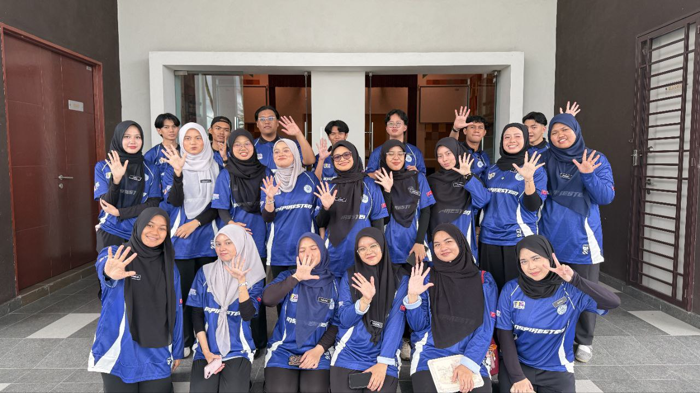
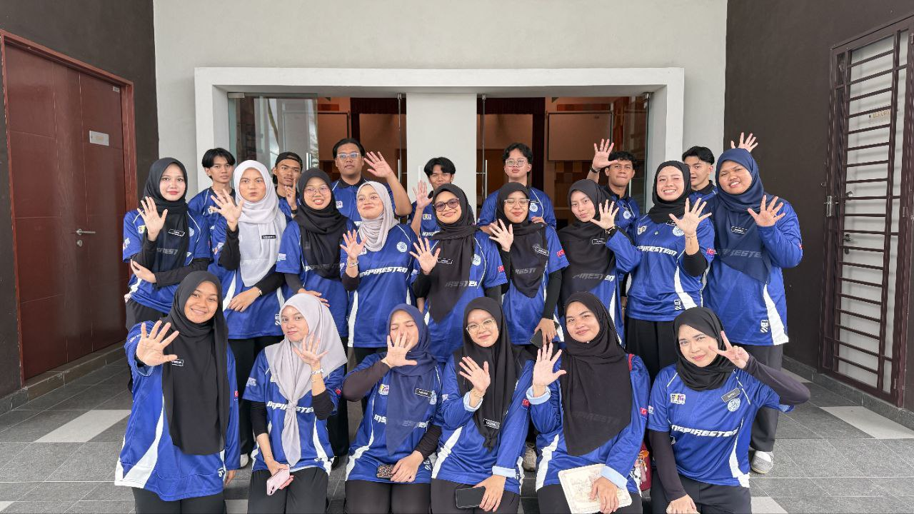

Academic Milestones
"The beautiful thing about learning is that no one can take it away from you."
01

2010 – 2011
Tabika Kemas Bukit Piatu
My first step into the world of learning, where I built my early foundations in reading and writing.
📍 Bukit Piatu, Malacca
02

2012 – 2017
SK Seri Duyong
The beginning of my academic journey and disciplined learning environment.
🏆 UPSR 2017: 5A 1B
📍 View on Map
03

2012 – 2017
SRA Jaim Seri Duyong
Balancing spiritual knowledge alongside standard primary education.
🏆 UPKK 2016: 8A
📍 View on Map
04

2018 – 2022
SBP Integrasi Selandar
A transformative boarding school experience focused on independence and leadership.
🏆 SPM 2022: 6A 5B+ 1C
📍 View on Map
05

Current Journey
ACTIVE
UiTM Cawangan Johor
Pursuing a Diploma in Information Management. Currently in my final semester at Segamat campus.
🏛️ Campus: Segamat, Johor
📍 View on Map


 
